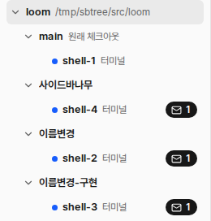

모든 워크트리 묶음이 저장소 아래에 같은 층으로 늘어선다. shell-2(이름변경)는 shell-1(main)의 자식이고, shell-3(이름변경-구현)은 shell-2의 자식이다. 그러나 사이드바에서는 이 관계가 보이지 않는다. 시험 데몬에서 찍었다(셸 노드 4개, 부모 연결 3개).

같은 장면을 세 안으로 그렸다. 장면: claude-1(main)이 이름변경과 사이드바나무를 띄웠다. 이름변경이 이름변경-구현을 띄웠다. 리뷰는 이름변경-구현 묶음에 있지만 부모가 사이드바나무다. 폭은 기본 260px다.
groupParents다. 그래프와 사이드바가 같은 모양이다.| 질문 | 권장 | 이유 |
|---|---|---|
| 자식 묶음의 자리 | A. 부모 묶음 아래, 그 묶음의 노드 뒤 | groupParents 하나로 그래프와 사이드바가 같은 나무가 된다. B는 노드 단위 부모 규칙을 하나 더 만든다. |
| 부모가 다른 묶음에 있는 노드 | 부모가 나무의 부모 묶음 밖에 있을 때만 표시와 툴팁 「부모: 사이드바나무 · 사이드바나무 워크트리」 | 보통은 묶음이 부모 묶음 바로 아래에 있어 나무가 관계를 보인다. 나무가 보이지 못하는 경우(리뷰)만 표시한다. |
| 안내선 | 조상 층마다 1px 세로선(--line-strong, 60%) | VS Code·Orca 탐색기와 같은 모양이다. 묶음과 노드가 섞여도 층을 따라갈 수 있다. |
| 들여쓰기 | 한 칸 16px → 12px, 깊이 8에서 멈춤 | 180px 최소 폭에서 워크트리 3층 노드 이름이 잘리지 않는다. 안내선이 줄인 칸을 보완한다. |
| 그대로 두는 것 | 접기·펴기, 안 읽음 수, 보관 수, 원래 체크아웃 꼬리표, ↑↓←→ 키, 고르기, 줄 key(group:<경로>) | 트리 줄 구조(Item)를 바꾸지 않고 자식 목록만 바꾼다. |
| 파일·함수 | 바꿀 것 |
|---|---|
web/src/repos.ts groupParents | 순환을 여기서 끊어 돌려준다(layout.ts의 breakCycles를 옮긴다). 그래프와 사이드바가 같은 순환 없는 나무를 받는다. |
web/src/layout.ts placeGroups | breakCycles 호출과 함수를 지운다. 받은 부모를 그대로 쓴다. |
web/src/Tree.tsx | 묶음 줄 만들기를 함수 groupItems(groups, parents, at)로 뽑아 자기를 부른다: 자식 = 노드 나무 + 자식 묶음. 묶음 줄에 브랜치 아이콘. nodeItems가 다른 묶음 부모 표시를 단다. |
web/src/styles.css | .tree-row 들여쓰기 12px와 깊이 상한, 안내선, 아이콘 크기. .name도 줄어들게 하고 .sub·.tag가 먼저 줄어든다. 좁은 폭에서도 이름과 안 읽음 수가 줄 안에 남는다. |
web/src/i18n/* | 툴팁 문구 「부모: {node} · {group}」 하나. |
docs/design.md 사이드바 줄 | 「트리는 저장소 > 워크트리 묶음(부모 묶음 아래) > 노드 > 자식 노드」로 고친다. |